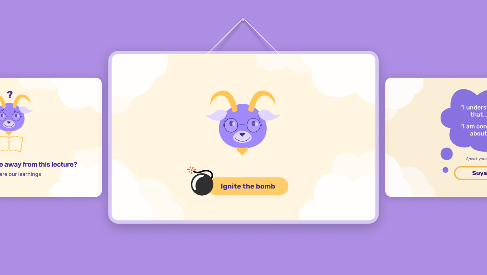

Assistive device to pour for the blind
Summary:
- Undentified unsolved problems with blind-fold simulation and interviews.
- Exploring multiple solutions and narrowing using SWOT analysis.
- Designed and prototype a device that could provide the tactile feedback loop.

Background
"Design intervention to help visually impaired persons safely pour and measure hot liquids."
The concern
Pouring and measuring liquids is a task we do as a part of various day to day activities like cooking, serving water, making tea and taking medicines. We rely heavily on visual feedback and hand eye coordination for performing the task safely and efficiently. Such tasks can be extremely difficult for the visually impaired. Without a visual feedback, a lot of information is missing that is essential such as position of cup and container, level of liquid, trajectory of liquid, etc. This project focuses on such cognitive aspects of ergonomics.
The problem
Blindfold simulation
I performed a blindfold simulation on myself for different scenarios and with different utensils. I observed the behaviour and the challenges first hand and analysed them through a video, breaking down into small tasks and challenges faced in each one.
User journey

Pouring cold water from a jug: insights
- Large mouth and bulky nature of the jug creates difficulty.
- Difficult to aim inside the glass, aligning takes some time.
- No feedback of how much water is pouring and is all of it going inside?
- Difference in temperature of glass’ outer surface provides feedback of the level of water filled inside.

Pouring hot tea using electronic leveler: Insights
- Storing electronic assistive devices: they might get misplaced.
- Leveler does not provide continuous feedback and creates a waiting time of doubt.
- Grooves on the thermos head provide friction for support against rim and clue to align.
- Flow in a thermos is controlled by the small openings, easy to open and shut the flow at any time with a press
SWOT Analysis
For developing assistive devices one needs to consider the abilities along with the disabilities of the user. It also becomes important to consider the environment of the user and the threats imposed by it. In their study, Fong-Gong Wu, Min-Yuan Ma, Ro-Han Chang discuss how SWOT analysis can be used to design a criteria for the design of an assistive device for a specific context.
The SWOT analysis for the current scenarios was done by listing out all the user statements, insights, observations, and design ideas and the sorting them into groups. Strengths, weaknesses, threats and opportunities were induced from those statements.
Strengths
- Gauge weight, balance, location and alignment to facilitate direct manipulation of light vessels at normal temperature.
- Can perform tasks step by step by assessing sequential feedback for each step at a time.
- Good, naturally learnt tactile sense to discriminate between different textures and temperature qualitatively.
- Easy to pour with small openings. They also provide enhanced audio feedback due to high pressure of a small stream.
Weakness
- Difficulty in aligning multiple objects.
- Difficulty to rely on Tactilo-Kinesthetic Feedback for heavy and hot objects.
- Lack of continuous and multiple feedbacks (of position of vessels, trajectory of liquids) restrict user from taking impromptu regulation (of position of vessels, trajectory of liq.)
- Difficulty in handling and locating multiple discrete objects.
Opportunities
- A Multipurpose device for funneling, filtering and measuring.
- An intermediate measuring device to measure first and then pour.
- A separate dispensing system for any liquid.
- Electronic device with amplified/ augmented sensory feedback.
Threats
- Direct contact of liquid while pouring can cause burns.
- Getting burnt by touching a hot vessel while locating them.
- Burning sensation and discomfort due to steam rising from vessel.
- Dropping and breaking (also losing) objects.
Generating ideas from SWOT
After SWOT analysis, Weihrich (1982) proposed a strategy called the ‘‘TOWS’’ (Threats, Opportunities, Weaknesses, and Strengths). It is a method of systematically identifying relationships between these factors and suggesting solutions from the analysis. TOWS maximizes the Strengths and Opportunities, while minimizing the Weaknesses and Threats.
The corresponding labels with the sketches (SnOn/ WnOn) indicate the nth SWOT principle they are linked to.
Scampering with hero ideas
Concept S4O1 that uses a funnel like mechanism and S3O4 that has a floater for continuous feedback through electronic sound are the top two concepts and I thought to combine these two and have a device that helps in both pouring and measuring liquids.
The concept borrowed the idea of a funnel-like structure from S3O4 and a floater for continuous feedback from S4O1 while adding an extra feature of a base for stability and helping in alignment by making a unifying system between the cup and the pourer, using the continuous form.

Final Product
An independent apparatus that binds any vessel and a container into a system with tangible connections. It gives a form to the relations between pouring and poured vessel in space. Thus making up for the lack of visual referencing and estimations and facilitating seeing through hands.
A single hand stroke to initialize and then read the markings

As the kettle fits in the curve of base, it is aligned with mug

The opening of the kettle settles in the curves of the ring

Continuous feedback from the floater rising with the liquid

Stop pouring as the floater reaches the desired level
Testing
Prototype for Testingl
A thermocol working prototype was made for the purpose of testing. It consisted of the base for stability, a funnel on top for aligning and pouring through, a stem to link the two that also carried the markings corresponding to the height of the liquid. A U shaped stem with a floater is to be placed inside the mug.

Blindfold testing
The project was completed in lockdown condition due to COVID 19 and it was not possible to test it with actual users. Thus, it was tested at home by blindfolding people. The product was introduced to them only after blindfolding and was given to be used.
The product was tested against some qualitative and quantitative parameters. The users were first asked to fill a full cup without the product and then to do the same with the product. Time for both the activities was recorded for a time motion analysis. The other parameters were amount of spilling of water and accuracy of filling the required quantity.


Results: works but a bit overwhelming at start
The product was successful in making the pouring and measuring better in terms of accuracy and safety. It did not make a considerable difference in terms of efficiency. It could prevent water spilling and overfilling but still took some time for the user to familiarize herself with the product.
In the time motion analysis, both the tasks are done in a decent amount of time. The task without the product was done in 35 sec and with the product was done in 25 sec. There is a 10 sec difference but as compared to an average sighted person who can fill the glass in about 5-10 sec, it is still way more than double.
The time for aligning was more but it helped later. The time for pouring was reduced due to continuous feedback giving confidence to the user.
Thank You!
-

Improved debugging flow
Led the problem discovery, journey mapping and design of the debuging flow for API tests in Postman.
-

Accessible error signifier
A small change big impact story of creating subtle yet effective error signifiers and reducing the error.
-

Engagement in learning
An exploratory research to improve students' emotional and cognitive engagement in class participation.